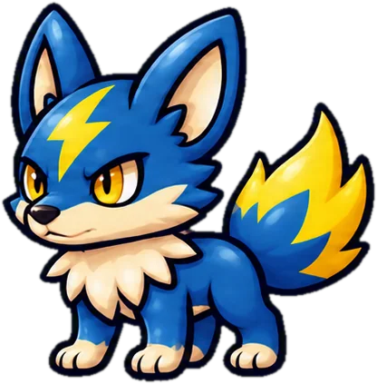

 ElectricDark
ElectricDarkTap a stage to read its story.
A bright blue fox kit with bold yellow lightning-bolt markings along its sides and a thick fluffy yellow tail, Voltix trots through Storm Spire's shadow-lanes with its head low and its eyes - two vivid amber sparks - scanning constantly. It crackles slightly when excited, small arcs of static popping between its ear-tips. The guardians who once watched over Storm Spire left a lantern for Voltix kits, because they always know the shortest path back to safety but are notoriously bad at waiting for anyone to follow.
Field note: Voltix always takes the path that has the least shadow between two points - it dislikes being fully in the dark, even its own kind of dark.
Ghost Hollow. Voltix and its family are found in the Ghost Hollow. See everyone who lives there.
Share a Bond Food that matches its types to become friends. Voltix loves:
A Bond Food is not a trick. It joins your spirit with the Kimuro's spirit, and only when it chooses you.
Print the Kimuro adventure packs: mazes, cards, a board game and Bond Mark medals.
See the printable packs